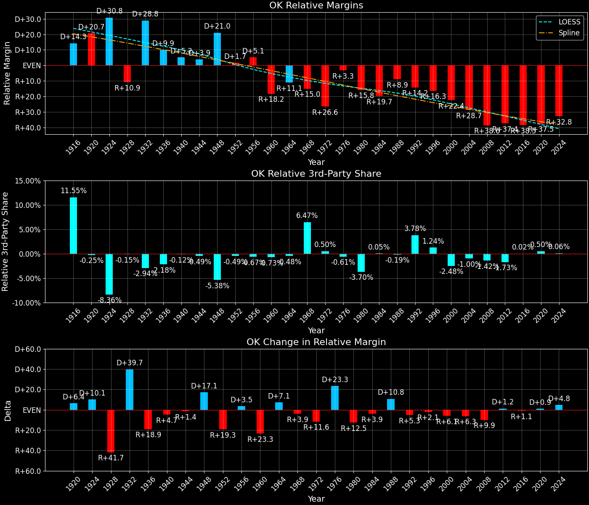

Oklahoma (OK) — Statewide

Margins · 3rd-Party share · Pres. deltas

Relative margins · Relative 3rd-Party · Rel. deltas
Oklahoma (OK) — Total Data
| Year | D | R | State Margin | Nat. Margin | Rel. Margin | Total votes | EVs |
|---|---|---|---|---|---|---|---|
| 1960 | 370,111(41.0%) | 533,039(59.0%) | R+18.0 | D+0.2 | R+18.2 | 903,150 | 8 |
| 1964 | 519,834(55.7%)(Δ 149,723) | 412,665(44.3%)(Δ -120,374) | D+11.5(Δ D+29.5) | D+22.6(Δ D+22.4) | R+11.1(Δ D+7.1) | 932,499(Δ 29,349) | 8 |
| 1968 | 301,658(32.0%)(Δ -218,176) | 449,697(47.7%)(Δ 37,032) | R+15.7(Δ R+27.2) | R+0.7(Δ R+23.3) | R+15.0(Δ R+3.9) | 943,086(Δ 10,587) | 8 |
| 1972 | 247,147(24.0%)(Δ -54,511) | 759,025(73.7%)(Δ 309,328) | R+49.7(Δ R+34.0) | R+23.1(Δ R+22.4) | R+26.6(Δ R+11.6) | 1,029,900(Δ 86,814) | 8 |
| 1976 | 532,442(48.7%)(Δ 285,295) | 545,708(50.0%)(Δ -213,317) | R+1.2(Δ D+48.5) | D+2.1(Δ D+25.2) | R+3.3(Δ D+23.3) | 1,092,251(Δ 62,351) | 8 |
| 1980 | 402,026(35.0%)(Δ -130,416) | 695,570(60.5%)(Δ 149,862) | R+25.5(Δ R+24.3) | R+9.7(Δ R+11.8) | R+15.8(Δ R+12.5) | 1,149,708(Δ 57,457) | 8 |
| 1984 | 385,080(30.7%)(Δ -16,946) | 861,530(68.6%)(Δ 165,960) | R+37.9(Δ R+12.4) | R+18.2(Δ R+8.5) | R+19.7(Δ R+3.9) | 1,255,676(Δ 105,968) | 8 |
| 1988 | 483,423(41.3%)(Δ 98,343) | 678,367(57.9%)(Δ -183,163) | R+16.6(Δ D+21.3) | R+7.7(Δ D+10.5) | R+8.9(Δ D+10.8) | 1,171,036(Δ -84,640) | 8 |
| 1992 | 473,066(34.0%)(Δ -10,357) | 592,929(42.6%)(Δ -85,438) | R+8.6(Δ D+8.0) | D+5.6(Δ D+13.3) | R+14.2(Δ R+5.3) | 1,390,359(Δ 219,323) | 8 |
| 1996 | 488,105(40.4%)(Δ 15,039) | 582,315(48.3%)(Δ -10,614) | R+7.8(Δ D+0.8) | D+8.5(Δ D+3.0) | R+16.3(Δ R+2.1) | 1,206,713(Δ -183,646) | 8 |
| 2000 | 474,276(38.4%)(Δ -13,829) | 744,337(60.3%)(Δ 162,022) | R+21.9(Δ R+14.1) | D+0.5(Δ R+8.0) | R+22.4(Δ R+6.1) | 1,234,229(Δ 27,516) | 8 |
| 2004 | 503,966(34.4%)(Δ 29,690) | 959,792(65.6%)(Δ 215,455) | R+31.1(Δ R+9.3) | R+2.5(Δ R+3.0) | R+28.7(Δ R+6.3) | 1,463,758(Δ 229,529) | 7 |
| 2008 | 502,496(34.4%)(Δ -1,470) | 960,165(65.6%)(Δ 373) | R+31.3(Δ R+0.1) | D+7.3(Δ D+9.7) | R+38.6(Δ R+9.9) | 1,462,661(Δ -1,097) | 7 |
| 2012 | 443,547(33.2%)(Δ -58,949) | 891,325(66.8%)(Δ -68,840) | R+33.5(Δ R+2.3) | D+3.9(Δ R+3.4) | R+37.4(Δ D+1.2) | 1,334,872(Δ -127,789) | 7 |
| 2016 | 420,375(28.9%)(Δ -23,172) | 949,136(65.3%)(Δ 57,811) | R+36.4(Δ R+2.8) | D+2.1(Δ R+1.8) | R+38.5(Δ R+1.1) | 1,452,992(Δ 118,120) | 7 |
| 2020 | 503,890(32.3%)(Δ 83,515) | 1,020,280(65.4%)(Δ 71,144) | R+33.1(Δ D+3.3) | D+4.5(Δ D+2.4) | R+37.5(Δ D+0.9) | 1,560,699(Δ 107,707) | 7 |
| 2024 | 499,599(31.9%)(Δ -4,291) | 1,036,213(66.2%)(Δ 15,933) | R+34.3(Δ R+1.2) | R+1.5(Δ R+5.9) | R+32.8(Δ D+4.8) | 1,566,173(Δ 5,474) | 7 |
Column explanations
- Δ
- Change (delta) in the value from the previous election year.
- Year
- Election year.
- D
- Number of votes for the Democratic candidate (raw count(pct%)).
- R
- Number of votes for the Republican candidate (raw count(pct%)).
- State Margin
- Margin between the two major-party candidates, including third-party votes ((D - R)/total).
- Nat. Margin
- The national presidential margin for that year, including third-party votes ((D_total - R_total)/total_votes).
- Rel. Margin
- The presidential margin relative to the national presidential margin (Margin - Nat. Margin).
- Total votes
- Total voter turnout or ballots cast (when provided).
- EVs
- Number of electoral votes allocated to this state or unit.
Oklahoma (OK) — Third-Party Data
| Year | D | R | Other votes | State 3rd-Party Share | 3rd-Party Nat. Share | 3rd-Party Rel. Share |
|---|---|---|---|---|---|---|
| 1960 | 370,111(41.0%) | 533,039(59.0%) | 0(0.0%) | 0.00% | 0.73% | -0.73% |
| 1964 | 519,834(55.7%)(Δ 149,723) | 412,665(44.3%)(Δ -120,374) | 0(0.0%) | 0.00% | 0.48% | -0.48% |
| 1968 | 301,658(32.0%)(Δ -218,176) | 449,697(47.7%)(Δ 37,032) | 191,731(20.3%) | 20.33% | 13.86% | 6.47% |
| 1972 | 247,147(24.0%)(Δ -54,511) | 759,025(73.7%)(Δ 309,328) | 23,728(2.3%) | 2.30% | 1.80% | 0.50% |
| 1976 | 532,442(48.7%)(Δ 285,295) | 545,708(50.0%)(Δ -213,317) | 14,101(1.3%) | 1.29% | 1.90% | -0.61% |
| 1980 | 402,026(35.0%)(Δ -130,416) | 695,570(60.5%)(Δ 149,862) | 52,112(4.5%) | 4.53% | 8.24% | -3.70% |
| 1984 | 385,080(30.7%)(Δ -16,946) | 861,530(68.6%)(Δ 165,960) | 9,066(0.7%) | 0.72% | 0.67% | 0.05% |
| 1988 | 483,423(41.3%)(Δ 98,343) | 678,367(57.9%)(Δ -183,163) | 9,246(0.8%) | 0.79% | 0.98% | -0.19% |
| 1992 | 473,066(34.0%)(Δ -10,357) | 592,929(42.6%)(Δ -85,438) | 324,364(23.3%) | 23.33% | 19.55% | 3.78% |
| 1996 | 488,105(40.4%)(Δ 15,039) | 582,315(48.3%)(Δ -10,614) | 136,293(11.3%) | 11.29% | 10.05% | 1.24% |
| 2000 | 474,276(38.4%)(Δ -13,829) | 744,337(60.3%)(Δ 162,022) | 15,616(1.3%) | 1.27% | 3.75% | -2.48% |
| 2004 | 503,966(34.4%)(Δ 29,690) | 959,792(65.6%)(Δ 215,455) | 0(0.0%) | 0.00% | 1.00% | -1.00% |
| 2008 | 502,496(34.4%)(Δ -1,470) | 960,165(65.6%)(Δ 373) | 0(0.0%) | 0.00% | 1.42% | -1.42% |
| 2012 | 443,547(33.2%)(Δ -58,949) | 891,325(66.8%)(Δ -68,840) | 0(0.0%) | 0.00% | 1.73% | -1.73% |
| 2016 | 420,375(28.9%)(Δ -23,172) | 949,136(65.3%)(Δ 57,811) | 83,481(5.7%) | 5.75% | 5.73% | 0.02% |
| 2020 | 503,890(32.3%)(Δ 83,515) | 1,020,280(65.4%)(Δ 71,144) | 36,529(2.3%) | 2.34% | 1.84% | 0.50% |
| 2024 | 499,599(31.9%)(Δ -4,291) | 1,036,213(66.2%)(Δ 15,933) | 30,361(1.9%) | 1.94% | 1.88% | 0.06% |
Column explanations
- Year
- Election year.
- D
- Number of votes for the Democratic candidate (raw count(pct%)).
- R
- Number of votes for the Republican candidate (raw count(pct%)).
- Other votes
- Number of votes for third-party (other) candidates (raw count(pct%)).
- State 3rd-Party Share
- Share of the vote received by third-party (other) candidates.
- 3rd-Party Nat. Share
- The national third-party share for that year (3rd-Party votes / total votes).
- 3rd-Party Rel. Share
- Third-party share relative to the national third-party share (3rd-Party share - Nat. 3rd-Party share).

Two-party margins · relative · deltas
Oklahoma (OK) — Two-Party Data
| Year | D | R | 2-Party Margin | 2-Party Nat. Margin | 2-Party Rel. Margin | EVs |
|---|---|---|---|---|---|---|
| 1960 | 370,111(41.0%) | 533,039(59.0%) | R+18.0 | D+0.2 | R+18.2 | 8 |
| 1964 | 519,834(55.7%)(Δ 149,723) | 412,665(44.3%)(Δ -120,374) | D+11.5(Δ D+29.5) | D+22.7(Δ D+22.5) | R+11.2(Δ D+7.0) | 8 |
| 1968 | 301,658(40.1%)(Δ -218,176) | 449,697(59.9%)(Δ 37,032) | R+19.7(Δ R+31.2) | R+0.8(Δ R+23.5) | R+18.9(Δ R+7.7) | 8 |
| 1972 | 247,147(24.6%)(Δ -54,511) | 759,025(75.4%)(Δ 309,328) | R+50.9(Δ R+31.2) | R+23.6(Δ R+22.8) | R+27.3(Δ R+8.4) | 8 |
| 1976 | 532,442(49.4%)(Δ 285,295) | 545,708(50.6%)(Δ -213,317) | R+1.2(Δ D+49.6) | D+2.1(Δ D+25.7) | R+3.3(Δ D+24.0) | 8 |
| 1980 | 402,026(36.6%)(Δ -130,416) | 695,570(63.4%)(Δ 149,862) | R+26.7(Δ R+25.5) | R+10.6(Δ R+12.7) | R+16.1(Δ R+12.8) | 8 |
| 1984 | 385,080(30.9%)(Δ -16,946) | 861,530(69.1%)(Δ 165,960) | R+38.2(Δ R+11.5) | R+18.3(Δ R+7.7) | R+19.9(Δ R+3.7) | 8 |
| 1988 | 483,423(41.6%)(Δ 98,343) | 678,367(58.4%)(Δ -183,163) | R+16.8(Δ D+21.4) | R+7.8(Δ D+10.5) | R+9.0(Δ D+10.9) | 8 |
| 1992 | 473,066(44.4%)(Δ -10,357) | 592,929(55.6%)(Δ -85,438) | R+11.2(Δ D+5.5) | D+6.9(Δ D+14.7) | R+18.2(Δ R+9.2) | 8 |
| 1996 | 488,105(45.6%)(Δ 15,039) | 582,315(54.4%)(Δ -10,614) | R+8.8(Δ D+2.4) | D+9.5(Δ D+2.6) | R+18.3(Δ R+0.1) | 8 |
| 2000 | 474,276(38.9%)(Δ -13,829) | 744,337(61.1%)(Δ 162,022) | R+22.2(Δ R+13.4) | D+0.5(Δ R+8.9) | R+22.7(Δ R+4.4) | 8 |
| 2004 | 503,966(34.4%)(Δ 29,690) | 959,792(65.6%)(Δ 215,455) | R+31.1(Δ R+9.0) | R+2.5(Δ R+3.0) | R+28.7(Δ R+6.0) | 7 |
| 2008 | 502,496(34.4%)(Δ -1,470) | 960,165(65.6%)(Δ 373) | R+31.3(Δ R+0.1) | D+7.4(Δ D+9.9) | R+38.7(Δ R+10.0) | 7 |
| 2012 | 443,547(33.2%)(Δ -58,949) | 891,325(66.8%)(Δ -68,840) | R+33.5(Δ R+2.3) | D+3.9(Δ R+3.4) | R+37.5(Δ D+1.2) | 7 |
| 2016 | 420,375(30.7%)(Δ -23,172) | 949,136(69.3%)(Δ 57,811) | R+38.6(Δ R+5.1) | D+2.2(Δ R+1.7) | R+40.8(Δ R+3.4) | 7 |
| 2020 | 503,890(33.1%)(Δ 83,515) | 1,020,280(66.9%)(Δ 71,144) | R+33.9(Δ D+4.7) | D+4.5(Δ D+2.3) | R+38.4(Δ D+2.4) | 7 |
| 2024 | 499,599(32.5%)(Δ -4,291) | 1,036,213(67.5%)(Δ 15,933) | R+34.9(Δ R+1.1) | R+1.5(Δ R+6.0) | R+33.4(Δ D+5.0) | 7 |
Column explanations
- Δ
- Change (delta) in the value from the previous election year.
- Year
- Election year.
- D
- Number of votes for the Democratic candidate (raw count(pct%)).
- R
- Number of votes for the Republican candidate (raw count(pct%)).
- 2-Party Margin
- Margin between the two major-party candidates, ignoring third-party votes ((D - R)/(D + R)).
- 2-Party Nat. Margin
- The national presidential margin for that year, including third-party votes ((D_total - R_total)/total_votes).
- 2-Party Rel. Margin
- The presidential margin relative to the national presidential margin (Margin - Nat. Margin).
- EVs
- Number of electoral votes allocated to this state or unit.